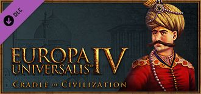

|  | |
| 概述 | |
| 类型 | 扩展包 |
| 发行日期 / 补丁 | 2017-11-16 / 1.23 |
| 商店：扩展包 | Paradox /Steam |
| 商店：兵模包 | Paradox / Steam |
文明的摇篮是欧陆风云4的第十一个扩展包，于2017年10月03日公布[1]。该扩展包随1.23版本发布于2017年11月16日[2]。
扩展包特色
- 新的政体：中东新增多种特殊政体，包括：马穆鲁克政体、波斯封建神权国、部落联邦以及帖木儿的继承人机制。
- 贸易政策：在贸易节点上激活商人从事特殊任务--促进牟利、间谍、军事、外交和宗教传播。
- 伊斯兰学派：许多逊尼和什叶学派不仅会增强各自国家的力量，还对中东地区的关系起到重要作用。
- 陆军职业度：依靠附庸新的将军和长期的军事训练，雇佣军的时代会慢慢褪去，转变为常备军的时代。
- 剥削发展：通过减少省份的发展度，迅速得到现金或人力，用国家的未来换取立竿见影的收益。
- 伊克塔税制：伊斯兰国家可每20年发布新税以获得特殊的加成。
- 更多：改变国家理念、传教行动、土耳其逊尼派和许多其他游戏内容。
免费内容
- 5种新的贸易货物：牲畜、香、玻璃、纸张和宝石。
- 重新设计了中东的地图
- 宫廷增加宗教和文化（对于统治者，继承人，配偶和顾问）
- 新的理念
- 2种新建筑
开发者日志
- 主条目：开发者日志
所有关于文明的摇篮扩展包和1.23 版本（波斯）、1.24 版本（日本）的开发者日志。
- 1.23 版本（波斯）
| 编号 | 原文链接 | 译文链接 | 描述 | 日期 |
|---|---|---|---|---|
| 1 | Near East Facelift | Changes in the Arabia and Egypt regions for update 1.23 | 2017-08-01 | |
| 2 | Anatolia and the Caucasus | Map and general setup changes coming for the Caucasus and Anatolia regions as part of the 1.23 patch | 2017-08-08 | |
| 3 | The Greater Iranian Region | Changes in the Persian super-region and new trade goods to be introduced in patch 1.23 | 2017-08-15 | |
| 4 | Army Drills | A partial overview of the new setup of trade goods and a peek at the new Army drill mechanic | 2017-08-22 | |
| 5 | Army Professionalism | Armies get expanded upon with a new professionalism level while marching into more "modern" times | 2017-08-29 | |
| 6 | Trade Policies | 2017.9.5开发日志-贸易政策 | Use trade policies to promote profiteering, espionage, diplomacy and religion propagation. | 2017-09-05 |
| 7 | Islam and Piety | 【2017.9.12】开发日志 | Islam changes move piety between the Mysticism/Legalism extremes and introduces the Muslim Schools of Law. | 2017-09-12 |
| 8 | Tribal Allegiance | New government mechanics for Tribal Federations infuse changes to the Turkmen sheep nations in the Middle East. | 2017-09-19 | |
| 9 | The Persia Update | 【2018.9.26】波斯 | A closer look on the changes at the Persian region and introduction of the new Feudal Theocracy government | 2017-09-26 |
| 10 | Ottomans Extended | 【开发日志】10月3日--罗姆苏丹国 | Restoring the Sultanate of Rûm gains access to the Ottoman Government, itself extended with Pashas and Jannisaries | 2017-10-03 |
| 11 | Mamluks and Iqta Government | Description of the new Mamluk Government and changes to the Iqta government form | 2017-10-10 | |
| 12 | 开局界面，传教士和模组 | 10月17日开发日志 | 开局会显示国家的情况，传教士可以帮附庸传教，Groogy为制作模组更简单而做的事情 | 2017-10-17 |
| 13 | Military tidbits and AI updates | A military mixed-bag of features along with parting words from Gnivom, EU4's AI programmer, accompanied by an overview of future AI improvements and any AI cheats present in 1.23 | 2017-10-24 | |
| 14 | MP streamlined | MP gets several issues sorted with 1.23 - expect a more smooth experience. | 2017-10-31 | |
| 15 | Additions and achievements | Achievements for patch 1.23 revealed along with the last features of the Cradle of Civilization expansion. | 2017-11-07 | |
| 16 | Persia Update Patch Notes | 1.23补丁日志 | A sneak preview of the 1.23 Persia patch notes | 2017-11-14 |
| 17 | Post Release Patch | Post release bug-support in the short term and and some planned enhancements in the mid-term | 2017-11-21 |
- 1.24 版本(日本)
| 编号 | 原文链接 | 译文链接 | 描述 | 日期 |
|---|---|---|---|---|
| 18 | 日本和菲律宾 | 【牧游社-牧有汉化】欧陆风云4开发日志-日本与菲律宾 11月28日开发日志 |
重做菲律宾并且在日本新加部分省份和国家 | 2017-11-28 |
| 19 | 游戏优化和平衡 | 【牧游社-牧有汉化】欧陆风云4开发日志-变法、捉虫与平衡性修正 12月5日开发日志 |
后期游戏性能优化和平衡，陆军移动速度的改变和陆军职业化 | 2017-12-05 |
| 20 | Japan Update Changelog | 【牧游社-牧有汉化】欧陆风云4开发日志-1.24版本号日本更新 | Changelog for the 1.24 Japan update. | 2017-12-12 |
| 21 | 2017圣诞总结 | 【牧游社-牧有汉化】欧陆风云4开发日志-The 2017 Christmas Wrapper | 2017回顾与总结 | 2017-12-19 |
参考资料
- ↑ Forum: Cradle of Civilization Expansion for EU4 Focuses on Muslim Empires, 2017-10-03
- ↑ Forum: Cradle of Civilization Feature Breakdown, 2017-10-24